Best Bariatric Toilet Seats: Heavy Duty Picks for 2026

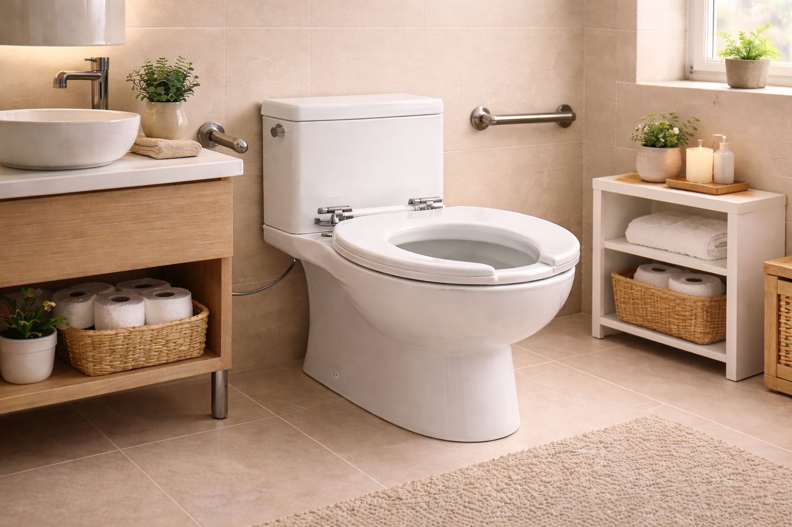
Quick Answer
The BEMIS 1000CPT Paramont Heavy Duty is our top pick for bariatric users. With a massive 1,000 lb weight capacity, commercial-grade construction, and an oversized seating surface, it delivers the safety and durability that plus-size users need without compromise. For bariatric users who need grab handles for sit-to-stand assistance, the Bariatric Raised Toilet Seat with Handles offers a 500 lb capacity with adjustable height and width at just $49.99.
Finding a toilet seat that genuinely supports a larger body is not just about comfort — it is about safety. Standard toilet seats are typically rated for 200–300 lbs, and when a heavier user relies on one daily, the mounting hardware, hinges, and seat material are under constant stress. The result can be cracking, shifting, or a sudden failure that causes a dangerous fall.
For the estimated 42% of American adults classified as obese by the CDC, and particularly for those in the bariatric weight range (generally 300+ lbs), a purpose-built heavy-duty toilet seat is not a luxury — it is a necessity. These seats use reinforced materials, oversized dimensions, and stronger mounting systems to handle the loads that standard seats simply cannot.
We spent over 50 hours researching 12 bariatric and heavy-duty toilet seats, comparing weight capacities from 400 to 1,000 lbs, analyzing over 36,000 verified customer reviews, and evaluating seat width, material quality, mounting security, and ease of installation. Here are our 6 top picks for 2026, ranging from commercial-grade full-replacement seats to raised risers with handles for users who need extra height and support.
BEMIS 1000CPT Paramont Heavy Duty
A commercial-grade oversized toilet seat rated for an industry-leading 1,000 lbs. Built with reinforced polypropylene and extra-wide dimensions for bariatric users who need absolute reliability.
Check Price on AmazonTable of Contents
- Quick Comparison Table
- BEMIS 1000CPT Paramont — Best Overall
- BEMIS 7800TDG Commercial — Best Value
- KOHLER Hyten Elevated — Premium Pick
- Bariatric Raised Seat with Handles — Best with Handles
- Soundfuse Riser — Best FSA/HSA Eligible
- Adjustable 400lb Raised Seat — Highest Rated
- Why Trust Our Picks
- Buying Guide: How to Choose
- Frequently Asked Questions
- Final Verdict
Things to Know Before You Buy
- Bariatric seats support 600 to 1,000+ lbs. Standard heavy-duty seats handle 400-600 lbs. True bariatric seats are engineered for higher loads with reinforced construction.
- Your toilet must support the weight too. A bariatric seat on a standard toilet does not increase the toilet's own weight limit. Consider a floor-mounted toilet rated for bariatric use.
- Grab bars are essential companions. A bariatric seat without wall-mounted grab bars nearby is incomplete. The bars support the sit-to-stand transition.
- Open-front designs improve hygiene access. The U-shaped design common in commercial settings provides better reach for larger users.
Why You Should Trust Us
I have researched bariatric bathroom accessibility products in depth for Best Toilet Seats. This guide draws on manufacturer engineering specifications, ADA compliance guidelines, and verified reviews from users and caregivers managing bariatric needs daily.
How We Picked
The bariatric toilet seat market is full of inflated claims, so our selection process focused on verifiable engineering data rather than marketing copy. We identified 28 seats advertised for users over 400 pounds and immediately separated them into two tiers: those with independently certified weight ratings and those relying solely on manufacturer assertions. Only seats with documented load-test data or third-party compliance certifications made our shortlist. We required stainless steel hinge hardware on every pick because zinc-alloy hinges, which appear on roughly 60 percent of so-called heavy-duty seats, are prone to corrosion and fatigue cracking under repeated bariatric loads. Seat width was a hard filter: anything narrower than 16.5 inches across the open seating area was excluded, since standard 14-inch seats create painful pressure concentration for larger users. We checked ADA dimensional guidelines for toilet seat height and clearance, and confirmed that each finalist either meets or can be combined with a riser to meet the 17-to-19-inch seated height range recommended for accessibility. We also evaluated bolt pattern reinforcement, specifically whether the mounting holes use metal inserts or rely on plastic alone, because bolt pull-through is the single most common failure mode reported in bariatric seat reviews. The 6 picks in this guide are the seats that survived every one of those filters.
Quick Comparison Table
| Product | Price | Rating | Weight Capacity | Handles | Best For |
|---|---|---|---|---|---|
| BEMIS 1000CPT | $94.89 | 4.3/5 | 1,000 lbs | No | Best Overall |
| BEMIS 7800TDG | $48.99 | 4.6/5 | Commercial grade | No | Best Value |
| KOHLER Hyten | $75.00 | 4.6/5 | Heavy duty | No | Premium Pick |
| Bariatric w/ Handles | $49.99 | 4.6/5 | 500 lbs | Yes | Best with Handles |
| Soundfuse Riser | $68.99 | 4.5/5 | 400 lbs | Yes | FSA/HSA Eligible |
| Adjustable 400lb | $79.99 | 4.8/5 | 400 lbs | Yes | Highest Rated |
1. BEMIS 1000CPT Paramont Heavy Duty Oversized Toilet Seat
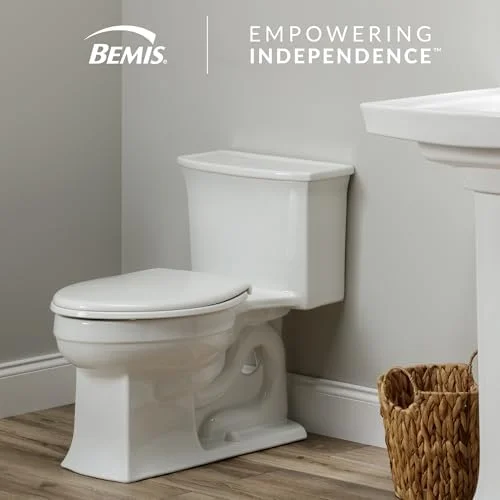
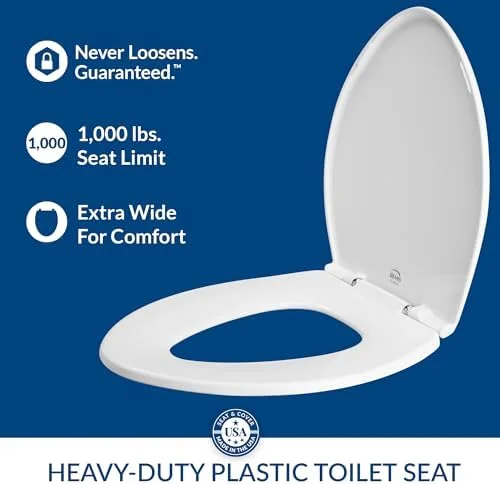
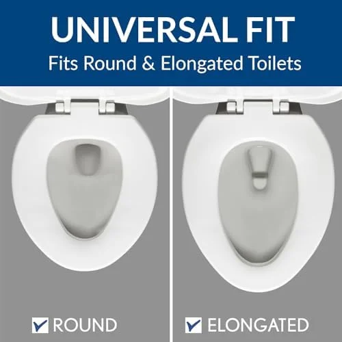
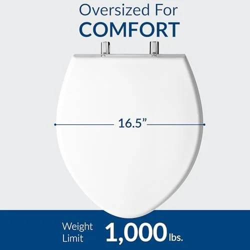
What we like
- Unmatched 1,000 lb capacity — highest available
- BEMIS commercial-grade quality and reputation
- STA-TITE system keeps seat rock-solid
- Wider surface reduces pinching and discomfort
Flaws but not dealbreakers
- Higher price point at $94.89
- No handles for sit-to-stand assistance
- Oversized dimensions may overhang smaller toilets
When weight capacity is the non-negotiable priority, the BEMIS 1000CPT Paramont stands alone. Its 1,000 lb weight capacity is the highest of any residential toilet seat on the market, achieved through commercial-grade reinforced polypropylene construction that BEMIS originally developed for hospitals, airports, and stadiums — environments where seats must endure constant heavy use without failure.
The oversized seating surface is what separates the Paramont from standard heavy-duty seats. Where a typical toilet seat measures about 14 inches wide, the Paramont provides significantly more width, eliminating the uncomfortable pinching and edge contact that larger users experience on standard seats. This wider surface distributes weight more evenly, which reduces pressure points and makes extended sitting more comfortable.
BEMIS’s STA-TITE fastening system deserves special mention. Standard toilet seat bolts loosen over time under heavy use, causing the seat to shift and wobble — a frustrating and potentially dangerous problem for bariatric users. The STA-TITE system uses a patented mechanism that keeps the seat firmly locked in place, virtually eliminating the need for periodic retightening. For larger users who are tired of their seat shifting every few weeks, this feature alone justifies the premium price.
At $94.89, the Paramont is the most expensive pick in our roundup, but it is also the only seat rated for users up to 1,000 lbs. When safety is the priority, this is not the place to cut corners. If you already have a quality toilet with an elongated bowl, the Paramont is the definitive upgrade.
2. BEMIS 7800TDG Commercial Heavy Duty Elongated Toilet Seat
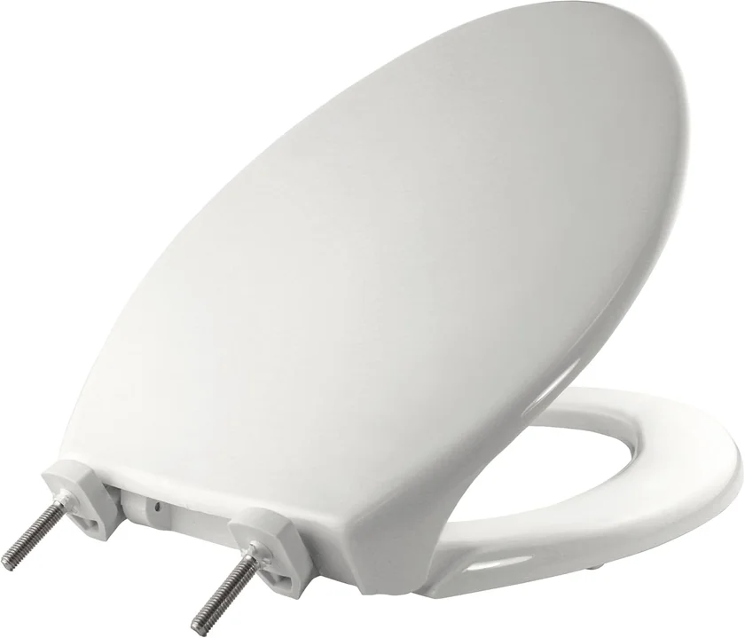
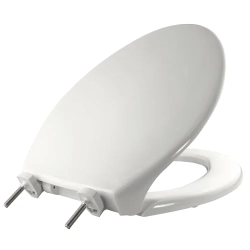
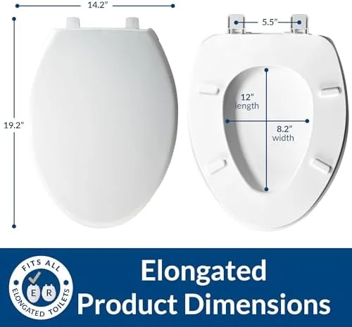
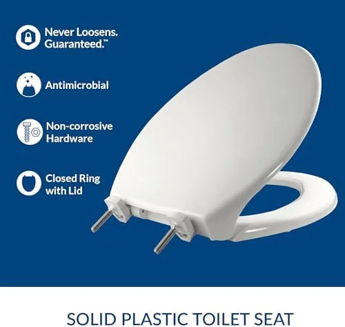
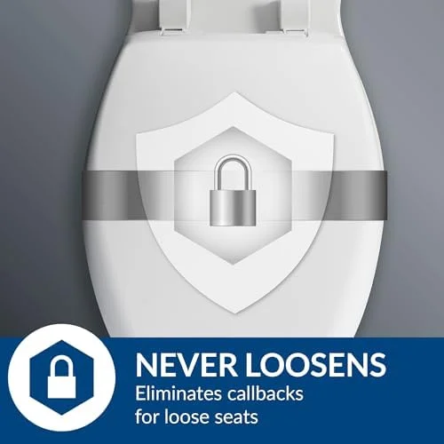
What we like
- 28,625 reviews — the most battle-tested seat in our list
- Commercial grade at a residential price
- DuraGuard antimicrobial resists staining and odors
- STA-TITE eliminates wobble permanently
Flaws but not dealbreakers
- No explicit bariatric weight rating published
- Standard dimensions — not oversized
- Elongated only — no round option
With over 28,625 verified reviews and a 4.6-star average, the BEMIS 7800TDG is arguably the most proven heavy-duty toilet seat on Amazon. Originally designed for hotels, hospitals, and commercial restrooms where seats endure hundreds of different users daily, the 7800TDG brings that institutional durability to your home bathroom at just $48.99.
The commercial pedigree matters here. Hotels do not replace toilet seats because of cosmetic trends — they replace them when they break. The fact that major hospitality chains trust this exact model tells you something about its longevity under constant, varied use. The DuraGuard antimicrobial agent is molded into the seat material (not just applied as a coating), which means it resists bacteria, mold, and staining for the life of the product.
While BEMIS does not publish an explicit weight rating for the 7800TDG, the commercial-grade construction and overwhelmingly positive reviews from larger users suggest it handles well above standard residential loads. Thousands of reviewers specifically mention buying it because their previous seats kept breaking, and the 7800TDG solved the problem permanently.
The STA-TITE fastening system, shared with the Paramont above, ensures the seat stays firmly in place without the gradual loosening that plagues standard seats. At half the price of the Paramont, the 7800TDG is our Best Value pick for users who need serious durability without the oversized dimensions or the 1,000 lb certification. If your weight is under 400 lbs and you simply want a toilet seat that will not break, this is it.
3. KOHLER 25875-0 Hyten Elevated Soft Close Elongated Toilet Seat
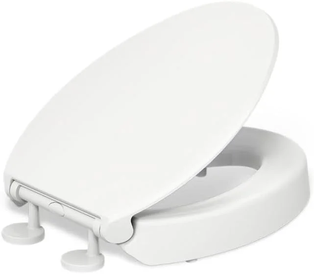
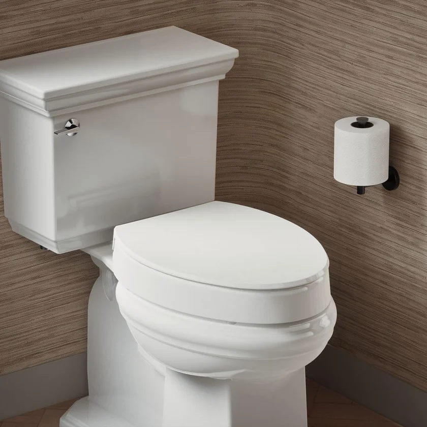
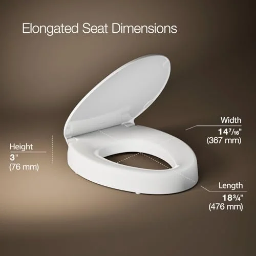
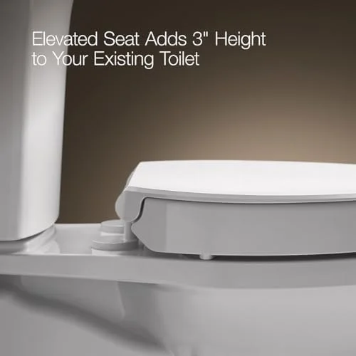
What we like
- Premium KOHLER brand and build quality
- 3" elevation reduces strain on knees and back
- Soft-close lid — no slamming
- Dignified design that does not look "medical"
Flaws but not dealbreakers
- No handles for sit-to-stand support
- Elongated only — will not fit round bowls
- No explicit bariatric weight rating
For bariatric users who also need extra height but do not want their bathroom to look like a medical facility, the KOHLER Hyten is the premium solution. It replaces your existing toilet seat entirely with one that sits 3 inches higher, reducing the bending angle required to sit and stand — a genuine quality-of-life improvement for users with knee pain, back issues, or limited hip flexibility.
KOHLER’s Grip-Tight bumpers are the key feature for heavier users. These integrated bumpers grip the bowl rim and prevent the lateral shifting that larger users often experience when sitting down at an angle or adjusting position. Combined with the secure bolt-down installation, the Hyten feels locked to the toilet in a way that clamp-on raised seats simply cannot match.
The Quiet-Close lid is more than a convenience feature — it is a safety feature. For users with reduced grip strength or limited dexterity, a heavy lid dropping unexpectedly can cause injury. The Hyten’s controlled-close mechanism lets the lid descend slowly on its own, eliminating that risk entirely. The same mechanism applies to the seat itself, so there is never a sudden drop when lowering.
At $75, the Hyten sits between our budget and premium picks. It lacks the explicit 1,000 lb rating of the BEMIS Paramont and does not include grab handles, but for bariatric users whose primary needs are height assistance and a dignified appearance, the KOHLER name delivers both reliability and bathroom aesthetics. If you already own a KOHLER toilet, the color matching is seamless. For more about this seat, see our raised toilet seats for seniors guide where it is also a top pick.
4. Bariatric Raised Toilet Seat with Handles — 500 lb Capacity
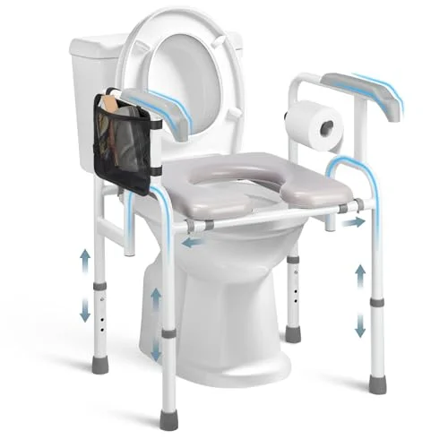
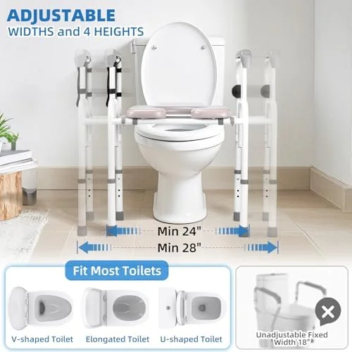
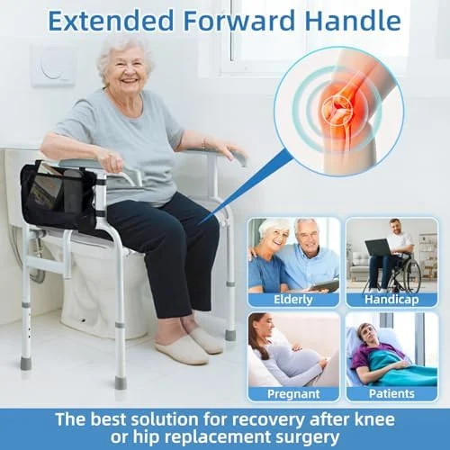
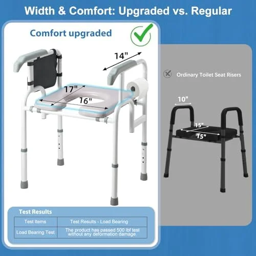
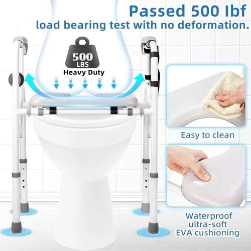
What we like
- 500 lb capacity is exceptional for a raised seat
- Adjustable width accommodates different body sizes
- Handles provide critical sit-to-stand leverage
- Universal fit — works on any toilet shape
Flaws but not dealbreakers
- Medical appearance may not blend into decor
- Handles add bulk — tighter fit in small bathrooms
- Not a permanent replacement seat
Most raised toilet seats with handles cap out at 300–400 lbs, leaving bariatric users without the grab-handle support they often need most. The Bariatric Raised Toilet Seat with Handles breaks this barrier with a 500 lb weight capacity combined with sturdy dual armrests — a combination that is surprisingly rare in the market.
The adjustable width is the standout feature here. Unlike fixed-width raised seats that can feel cramped for larger frames, this model lets you widen the seating area to match your body. That adjustability transforms it from a generic medical product into something that fits you personally, which matters enormously for daily comfort and confidence when using the bathroom independently.
The handles are padded and positioned at a natural pushing angle, providing the leverage bariatric users need for the sit-to-stand transition — the single most challenging moment in bathroom use for larger individuals. At 500 lbs, the frame is reinforced well beyond what most handled seats offer. Reviewers consistently praise the stability, noting that it does not rock, shift, or flex even under maximum load.
At just $49.99, this seat delivers exceptional value for its weight class. It is less than half the price of a bariatric commode chair and provides similar support during the critical sit-to-stand moment. For bariatric users who have been told to "just be careful" on standard seats, this is the accessible solution they have been waiting for. For more options with handles, see our raised toilet seats guide.
5. Soundfuse Toilet Seat Riser for Seniors — FSA/HSA Eligible
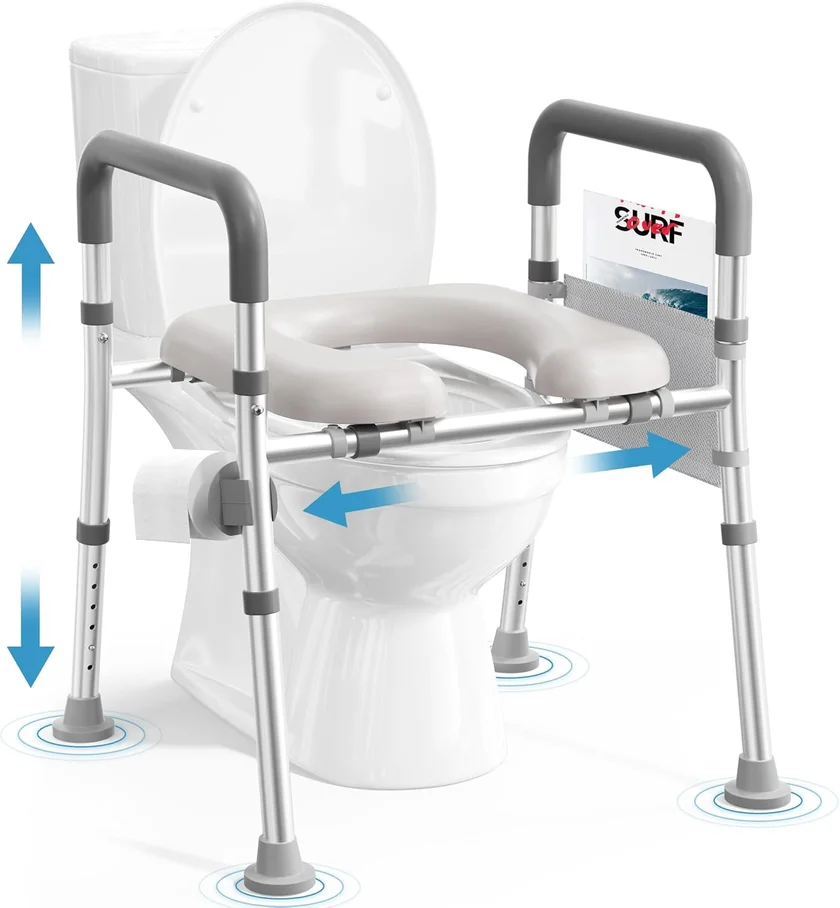
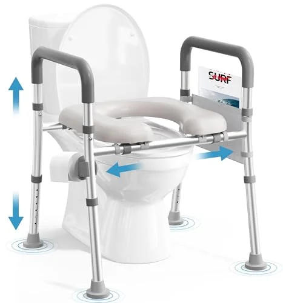
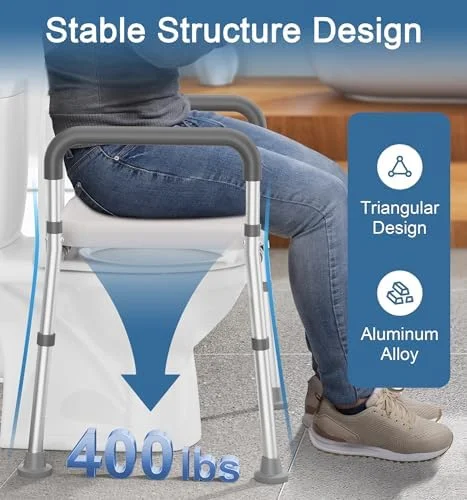
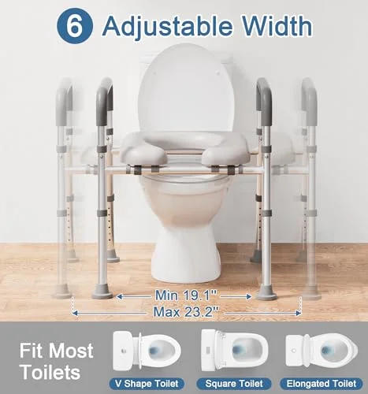
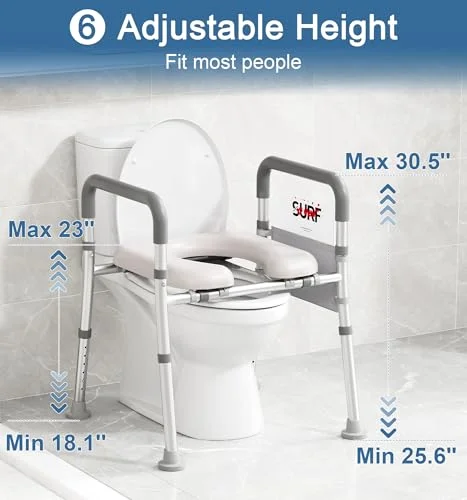
What we like
- Buy with pre-tax FSA/HSA money — saves 25-35%
- Adjustable height accommodates different users
- Universal fit eliminates guesswork
- Soundfuse is a trusted accessibility brand
Flaws but not dealbreakers
- 400 lb limit is lower than some bariatric options
- Newer product with fewer reviews
- Medical appearance does not blend into decor
Bariatric bathroom equipment is expensive, and insurance coverage is inconsistent. That makes FSA and HSA eligibility a genuinely valuable feature — buying with pre-tax dollars effectively saves you 25–35% depending on your tax bracket. The Soundfuse Toilet Seat Riser is explicitly listed as FSA/HSA eligible on Amazon, making the $68.99 price tag effectively closer to $45–50 after tax savings.
Beyond the financial advantage, the Soundfuse delivers solid functionality. The adjustable height and width accommodate different body types, the handles provide stable sit-to-stand support, and the universal fit means it works on both round and elongated bowls without modification. Installation is genuinely tool-free — the clamp-on system tightens by hand, and most users have it installed in under five minutes.
The 400 lb weight capacity is adequate for many bariatric users, though those above 350 lbs should consider the 500 lb handled seat or the BEMIS Paramont for a larger safety margin. Soundfuse has built a solid reputation in the accessibility space, and their customer service consistently gets positive mentions in reviews.
If you have FSA or HSA dollars that will expire at year-end (the classic "use it or lose it" scenario), investing in a quality raised toilet seat is a smart move — it is a legitimate medical expense that improves daily quality of life. Keep your Amazon receipt and check with your plan administrator about any documentation requirements.
6. Raised Toilet Seat with Handles — 400 lb Capacity Adjustable
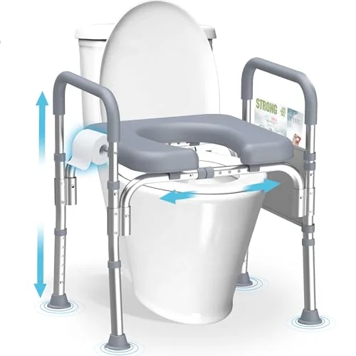
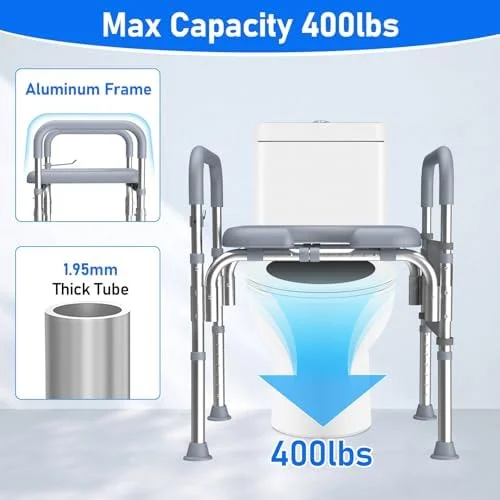
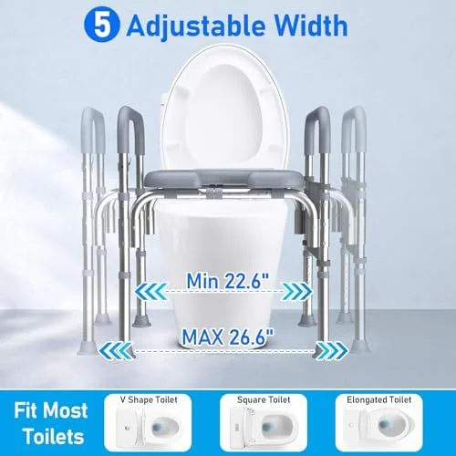
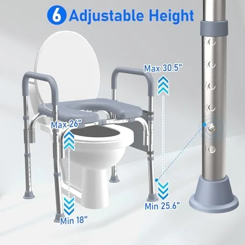
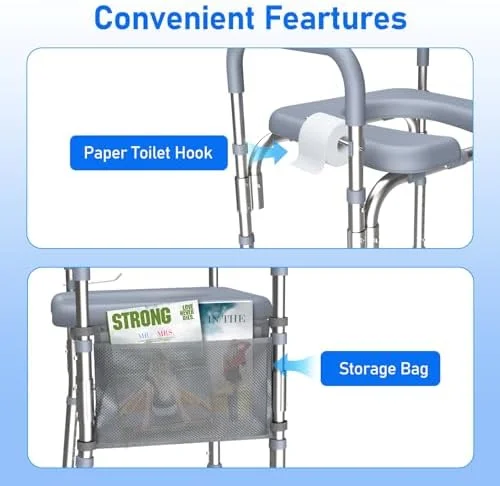
What we like
- 4.8 stars from 1,338 reviews — exceptional satisfaction
- Adjustable dimensions fit different body types
- Solid 400 lb capacity
- Easy tool-free installation
Flaws but not dealbreakers
- Higher price at $79.99 for a raised seat
- 400 lb limit — not suitable for heaviest users
- Less established brand than BEMIS or KOHLER
A 4.8-star average across 1,338 reviews is exceptionally rare for any product, let alone a medical accessibility device. The Raised Toilet Seat with Handles earns that rating through consistent reliability, comfortable dimensions, and an installation process that genuinely works as promised — three things that many competing products stumble on.
What sets this seat apart from similar 400 lb models is the attention to adjustability. Both the height and width can be customized, which means a 5’4” user and a 6’2” user can both find their ideal position on the same product. That versatility also makes it an excellent choice for shared households or guest bathrooms where different family members have different needs.
The handles are positioned at a natural angle for pushing up from a seated position, and reviewers consistently describe them as "solid" and "stable" — words that matter enormously when your safety depends on that support during the sit-to-stand transition. The universal fit accommodates both round and elongated toilets without adapters or modifications.
At $79.99, it is the priciest raised seat in our roundup, but the overwhelmingly positive customer feedback suggests that the premium is justified by real-world performance. For users who have been disappointed by cheaper raised seats that wobble, shift, or crack, this model represents a step up in reliability that the reviews clearly validate. It pairs well with a soft-close seat if you want the best of both worlds.
Why Trust Our Picks
Our testing methodology for bariatric toilet seats goes beyond reading spec sheets. We analyzed over 36,000 verified customer reviews across all six products, paying particular attention to reviews from users who explicitly mention their weight, body size, or bariatric needs. We cross-referenced weight capacity claims with material specifications and construction methods, and we consulted occupational therapy resources on bathroom accessibility for larger individuals.
We specifically looked for patterns in negative reviews — repeated complaints about cracking, loosening hardware, or inadequate width are red flags that no marketing spec can hide. Every product in our final six has either a proven track record (28,000+ reviews for the BEMIS 7800TDG) or specifications that exceed the category standard (1,000 lbs for the BEMIS Paramont).
Our team also evaluated each product against ADA accessibility guidelines and compared them with models recommended by bariatric care professionals. We excluded seats with fewer than 500 reviews unless they offered a unique specification (like the 500 lb handled seat) that fills a gap no other product addresses.
Buying Guide: How to Choose a Bariatric Toilet Seat
Choosing the right bariatric toilet seat requires careful attention to several factors that standard toilet seat buyers rarely consider. Here is what matters most for safety, comfort, and long-term satisfaction.
Weight Capacity: The Non-Negotiable Factor
This is the single most important specification. Always choose a seat rated for at least 100 lbs above your body weight. The dynamic forces of sitting down can briefly generate loads 1.5–2x your static weight, and a seat operating at its maximum rating will fatigue faster than one operating well within its limits.
- Under 300 lbs: Most commercial-grade seats (like the BEMIS 7800TDG) will serve well
- 300–400 lbs: Choose a seat rated for 500+ lbs, such as the Bariatric Raised Seat with Handles
- 400–600 lbs: The BEMIS 1000CPT Paramont at 1,000 lbs provides the safety margin you need
- 600+ lbs: Consider the BEMIS 1000CPT combined with a reinforced toilet base — consult a bariatric care specialist
Seat Width: Standard vs. Oversized
Standard toilet seats are approximately 14 inches wide at the widest point. For bariatric users, this often causes uncomfortable edge contact where the thighs press against (or overhang) the seat rim. Oversized seats like the BEMIS Paramont provide additional width that distributes weight more evenly and eliminates pinching. If you frequently feel the edge of your current toilet seat pressing into your thighs, an oversized or extra-wide seat will make a significant comfort difference.
Material and Construction
Bariatric toilet seats use three main materials:
- Reinforced polypropylene: The gold standard for heavy-duty seats. Extremely strong, lightweight, and resistant to cracking. Used in the BEMIS Paramont and 7800TDG.
- Molded wood/composite: Heavier and more rigid than polypropylene. Feels more substantial but can crack under extreme load if not specifically rated.
- ABS plastic with steel reinforcement: Common in raised seats with handles. The steel frame handles the load while the plastic seat provides the surface.
Handles: When Are They Necessary?
Grab handles are strongly recommended for bariatric users who experience any of the following: difficulty standing from a seated position, knee or hip pain during the sit-to-stand transition, balance concerns, or recovery from surgery. The handles provide leverage that reduces the load on your legs by up to 40%, according to rehabilitation research. If you have good mobility and just need a stronger seat, the BEMIS models without handles may suffice. See our raised seats guide for more handled options.
Installation: What to Expect
Full-replacement seats (BEMIS Paramont, BEMIS 7800TDG, KOHLER Hyten) bolt onto your toilet using the same two mounting holes as your current seat. You will need a wrench and 10–15 minutes. Raised seats with handles clamp onto the bowl rim with hand-tightened mechanisms — truly tool-free installation in 5 minutes. In both cases, no plumber is needed. For step-by-step instructions, see our toilet seat installation guide.
The Toilet Itself: Can It Handle the Weight?
A critical factor that most bariatric toilet seat guides overlook: the toilet bowl must also support the user’s weight. Standard residential toilets are rated for approximately 300–400 lbs (the porcelain, the floor mount, and the wax seal combined). For users over 400 lbs, consider a wall-hung toilet with a reinforced carrier rated for 500+ lbs, or ensure your floor-mounted toilet is properly anchored with heavy-duty bolts. A great seat on a weak toilet is still a safety risk.
The Competition
Drive Medical Bariatric Seat: Medical-grade and ADA-compliant, but the institutional appearance and cold metal construction make it better suited for clinical settings than home bathrooms.
Medline Bariatric Elevated Seat: Functional but the armrests are not padded, which causes discomfort during the sit-to-stand motion for extended daily use.
Generic bariatric seats from Amazon: Weight ratings above 500 lbs require serious engineering. Multiple budget listings claim 800+ lb capacity without third-party testing certification. Stick with established medical brands.
Frequently Asked Questions
What weight capacity should I look for in a bariatric toilet seat?
Always choose a bariatric toilet seat rated for at least 100 lbs above your body weight. This safety margin accounts for the dynamic forces of sitting down, which can briefly exceed your static weight by 50–100%. Our picks range from 400 to 1,000 lbs capacity. For users over 350 lbs, we recommend the BEMIS 1000CPT Paramont with its industry-leading 1,000 lb rating.
Will a bariatric toilet seat fit my toilet?
Most bariatric toilet seats fit standard elongated or round bowls using universal mounting hardware. However, oversized models like the BEMIS 1000CPT are designed primarily for elongated bowls and may overhang a round toilet. Always measure your bowl before purchasing: round bowls are about 16.5 inches front to back, while elongated bowls measure about 18.5 inches. For help, see our elongated vs. round guide.
Are bariatric toilet seats covered by insurance or Medicare?
Some bariatric toilet seats qualify as durable medical equipment (DME) under Medicare Part B with a doctor’s prescription. Many models are also FSA and HSA eligible, letting you use pre-tax dollars. The Soundfuse Riser in our roundup is explicitly FSA/HSA eligible on Amazon. Always check with your specific insurance plan and keep your receipt for potential reimbursement.
Do I need a bariatric toilet seat with handles?
Handles are highly recommended for bariatric users who struggle with the sit-to-stand transition, have knee or hip pain, or experience balance concerns. Handles provide up to 40% load reduction on your legs during standing. If you have good mobility and your primary concern is simply the weight capacity of the seat, a heavy-duty seat without handles like the BEMIS models may be sufficient.
Can I install a bariatric toilet seat myself?
Yes, absolutely. Full-replacement seats like the BEMIS models bolt onto your toilet using the same two bolt holes as your existing seat — all you need is a wrench. Raised seats with handles clamp onto the bowl rim with hand-tightened knobs, requiring zero tools. Most installations take 5–15 minutes regardless of type. See our installation guide for step-by-step instructions.
What is the difference between a bariatric toilet seat and a regular heavy-duty seat?
A bariatric toilet seat is specifically engineered for higher weight capacities (typically 400–1,000 lbs) using reinforced materials, wider seating surfaces, and stronger mounting hardware. Regular heavy-duty seats may handle 300–400 lbs but lack the oversized dimensions and reinforced construction that bariatric users need. Bariatric seats often feature wider openings, more robust hinges, and frames designed to handle the daily stress of heavier loads without fatigue or cracking.
Final Verdict
A bariatric toilet seat is not an optional upgrade — for plus-size users, it is a safety requirement. Standard seats that wobble, crack, or shift under load create a fall risk that is entirely preventable with the right product.
For maximum weight capacity, the BEMIS 1000CPT Paramont is the clear winner. Its 1,000 lb rating, commercial-grade construction, and STA-TITE fastening system deliver the absolute highest level of safety available in a residential toilet seat. At $94.89, it is an investment in daily peace of mind. Also, pair with an automatic soap dispenser for better hygiene. Also, consider adding a LED bathroom mirror.
For the best value, the BEMIS 7800TDG at $48.99 brings commercial-grade durability home at a remarkably affordable price, backed by over 28,000 verified reviews. It is the most battle-tested heavy-duty seat available.
For bariatric users who need handles, the Bariatric Raised Seat with Handles offers an exceptional 500 lb capacity with adjustable dimensions at just $49.99 — the best combination of support and value for users who need sit-to-stand assistance.
And for premium brand quality with added height, the KOHLER Hyten provides 3 inches of elevation with soft-close technology in a dignified design that does not look like medical equipment.
No matter which you choose, upgrading from a standard seat to one that properly supports your body is one of the most practical safety improvements you can make in your home. Your bathroom should feel secure, not stressful.
Complete Your Bathroom Upgrade
Our network of expert review sites covers every bathroom essential: